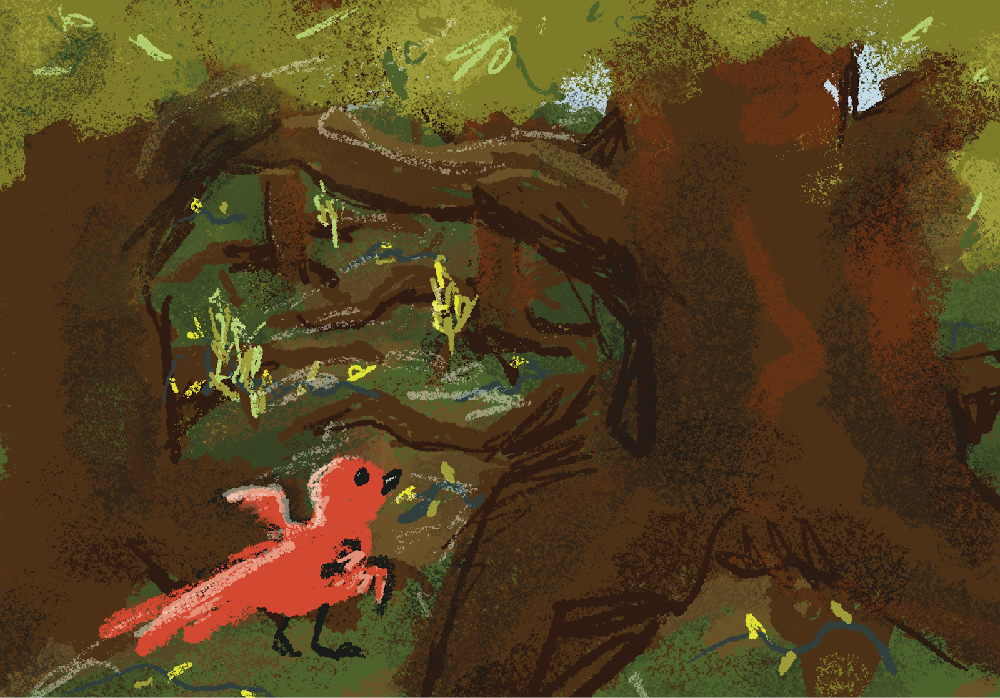

Since freshman year of college, I planned to make a game that would delve into flying mechanics in platforming, while also speaking to personal themes via the framing device of the woodlands, and their creatures. Senior year comes along, with my DNID English Capstone class, and it’s finally time to create the game that would become An Attempt to Fly.
The class structured itself for me to think differently about my game. Instead of thinking of it in a vacuum, for myself - to instead open my ideas up into and ground my work in the broader context of players, pre-existing media, and historical research. I found inspiration in the Open Doors for the Handicapped ULS Archive. Particularly, in the way that different mobility aids were marketed (FashionAble), and the historical reports of what benefits those that are handicapped, and how the accommodations are often misaligned (THE IMPACT OF SECTION 504).
In our case studies of other media in the field we were entering into, I found inspiration in How to Train Your Dragon, and A Short Hike. How to Train Your Dragon was inspiring narratively for its focus on disability and overcoming it in creative ways. I was inspired by A Short Hike for its level design, controller compatibility, and movement system. With these inspirations, I was able to iterate upon my concept to more fully flesh out the narrative with fictional and historical aspects, and improve the movement design of my game.
My development continued, now with the goal to inspire others to keep the creativity and drive to keep finding unique ways through their situations. Just like I had seen in fiction with How to Train Your Dragon, and in history, with Open Doors for the Handicapped.
Early development focused on the movement system and engaging level design. Separately, a portion of the narrative was written. User feedback was vital in iterating upon these. Narratively, the largest point of confusion from readers was “You” as the main character’s name and a reference to the reader simultaneously. Through workshopping, I landed upon “Yu” - so the word could better communicate as a name. Initially, the camera was fixed in one position behind the player. Through user testing, seeing players struggle to navigate around a 3D tree when the camera was only facing one direction, it was clear users needed a movable camera. In user testing after implementing the first version of camera controls, I received feedback to shift camera controls from a simple rotational model because orbiting in the y axis can be confusing. Constraining the Y-axis movement to just a tad away from above, and just a tad away from below the character model assisted in player’s understanding the game’s controls and the level itself - assisting players to get lost less often.
More design iterations focused on the level design itself. The main challenge for this vertical slice of the game was to climb a tree. This tree started out using planes - which players found very confusing during playthroughs, as one could not see the planes from their underside. Additionally, in this type of game - it was not intuitive to players they could jump through a platform. I made the decision I did not want the ability to jump through platforms in this world. As a result, I made use of 3D objects instead of planes - modeling the tree trunk and branches myself. Additionally, I brought platforms closer together to make scaling the tree more possible, and varied the shape of platforms to make cerebral challenges in platforming.
Ultimately, my game at the showcase garnered a lot of positive attention for its story, expansive world, and platforming challenge. However, if I want this game to achieve its goal of inspiring others to keep trying in their own lives, more revisions of the game are needed. I project adding in the rest of the narrative would help in this - as the story could speak to perseverance in Yu’s life.
An Attempt to Fly is a culmination of my DNID experiences, particularly in the department of games. This project flexed my research, critical study, writing, programming, and creative muscles - all key aspects of DNID. It also served to use my video game art skills - which I have been building over the course of my college career. This game serves well as a capstone as it shows my ability to create a game from start to finish - the writing, designing, production, art, and programming. This capstone speaks well to my versatility and ability to get larger projects done.
An Attempt to Fly fits in with the DNID Capstone class values in its end-of-semester form largely by showcasing the risks taken to create a better experience for the player-user. This iteration includes many asked-for changes: a movable camera, with cleaned-up vertical movement, a main tree platforming challenge with complex platforms, and with the added challenge of leaves blocking a player’s view at some angles. The class itself enforced testing, synthesizing, reflecting upon feedback, and iterating our projects. Without these aspects, my project would not have gotten to where it is now. While not directly visible in the project - throughout this class my favorite value to exemplify was seeking and sharing knowledge. I very much appreciated getting advice from my peers, and helping my peers where I could. This aided the trajectory of all projects in this class - but, and even more favorably in my own eyes, fostered a community within class. My favorite times in class were seeing people’s projects and sharing information about them. I will never forget those memories. The last quality my end-of-semester version of An Attempt to Fly exemplifies is wellbeing, because its author did not die via the ceiling tile (yet).
MySpokenSchedules! originated as a response to Sean’s hilarious inefficiencies in managing daily alarms and schedules. Thus, Dev Team 14 aimed to create a tool that could streamline notifications and daily schedules. The project started with detailed user personas to guide development: a haphazard college student, a busy professional, and a parent with a hectic schedule. These personas illustrated diverse needs, ranging from schedule organization to personalized alarms and reminders, which laid the foundation for the app’s key tasks. Initial goals included customizable task sounds, including dynamic voice reminders, playlist playing functionalities, and schedule lists. Schedules were intended to have non-repeating, day-repeating, and other types of repetitions. Early iterations of the app focused on the visual layout - we only dove into data storage midway through.
Throughout development, we managed actual data storage for task creation, editing, and schedule management. Alpha and beta versions of the app showcased clear progress, incorporating feedback to improve user interactions and refine functionalities. The app’s task system evolved to support label customization, message inputs, and specific time triggers. Schedules allowed users to group tasks, assign them to particular days, and toggle their activation. Notifications were refined to include dynamic AI voice readouts, providing clarity without requiring users to touch their phones. As the project advanced, key challenges such as emulator compatibility and the limitations of using Flutter on non-Apple devices prompted pivots in design and functionality. Features were tested rigorously through consultant sessions, ensuring they aligned with user needs.
Adjustments were necessary to maintain focus and meet deadlines: Spotify API and Sound Features: Originally envisioned as part of the app’s audio functionality, integrating Spotify proved unfeasible due to the absence of an official API and its complexity. This feature was scaled down to AI-generated voice readouts, which directly addressed the app’s core goal of delivering meaningful notifications. Location-Based Notifications: This feature was removed to streamline development and focus on time-based triggers, which were deemed more critical by users. Task Photos/Icons: While users expressed interest in customization options for icons, this feature was deprioritized to avoid scope creep. We did, however, ensure emojis worked in task and schedule creation - including them in the default “New Task” and “New Schedule” - so users could still have visual references for their tasks. These decisions allowed us to focus on delivering a cohesive experience, emphasizing the essential features to make schedules that are spoken and customizable.
The development of MySpokenSchedules! highlighted several key lessons:
MySpokenSchedules! is a scheduling tool that provides dynamic voice notifications, customizable task creation, and flexible schedule management. Users can create schedules that align with their routines, set personalized messages for tasks, and receive AI-generated voice reminders at specified times. The app prioritizes a distraction-free experience, allowing users to stay on track without needing to interact directly with their devices. While some features from the initial vision were scaled back, the app successfully delivers on its core promises, making it a valuable tool for users seeking an intuitive and efficient scheduling solution. It reflects a thoughtful balance between ambitious goals and practical constraints, embodying our commitment to user-centric design and iterative improvement.